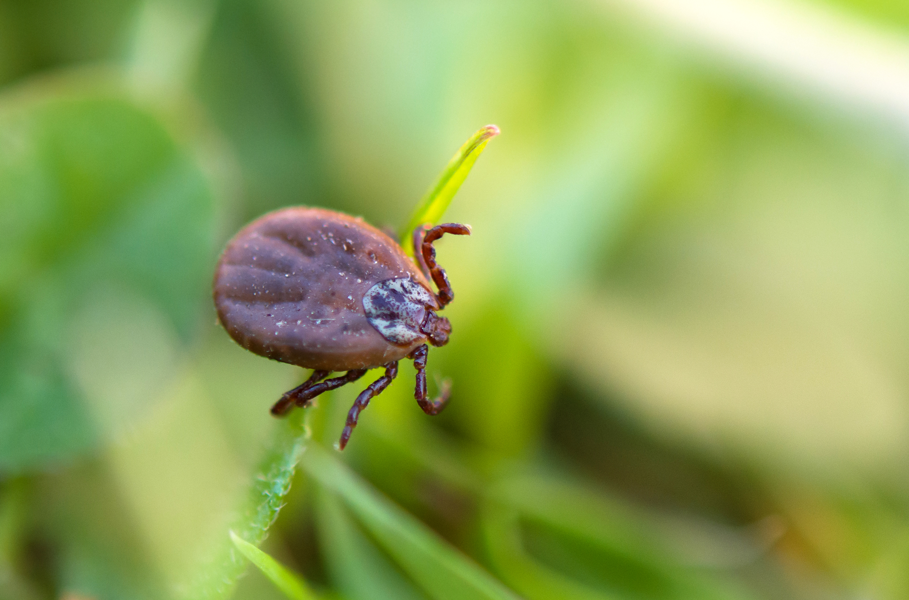

Acariens
/ Les Acariens
tites bêtes de 0,1 à 0,6 mm de la famille des arachnides (comme les araignées). Ils vivent deux à trois mois, mais peuvent avoir, en 3 mois, plus d'une centaine de descendants.
Ils préfèrent les milieux fortement humides (de 60 à 80 % d’humidité) et des températures avoisinant les 25 °C.

/ Qu'est-ce qui est allergisant chez un acarien ?
Les acariens ne transmettent pas de maladie, mais leurs corps et même leur cadavre et leurs selles sont allergisants. Les selles ou matières fécales forment des petites particules qui peuvent pénétrer facilement dans les voies respiratoires. Durant son existence, un acarien produit 200 fois le poids de son corps en matière allergisante.
Quand retrouve-t-on des taux maximaux d’acariens ?
Il y a des acariens toute l'année dans nos maisons, mais durant les périodes les plus humides, au printemps et à l'automne (quand on arrête ou on remet le chauffage en fait), on retrouve des quantités maximales d’acariens. Pour ces raisons, chez l'enfant qui débute une allergie aux acariens, on retrouve souvent des symptômes plutôt en septembre-octobre et en mars-avril. En hiver, lorsque la température diminue, les acariens ne se trouvent plus dans des conditions favorables pour se reproduire. Leur taux diminue.

/ Où faut-il les débusquer ?
Il faut traiter en priorité la chambre à coucher, surtout le lit et tous les objets posés dessus. Tout d'abord parce que votre enfant y passe 8 à 10 h minimum par jour, pendant qu'il dort. Le reste du temps, il est principalement à l'école ! ET parce que c'est son lieu d'habitat privilégié.
Peut-on évaluer l'infestation en acarien ?
Il existe des tests pour évaluer le taux d’acarien grossièrement comme l’Acarex test On réserve leur utilisation à certains cas particuliers.